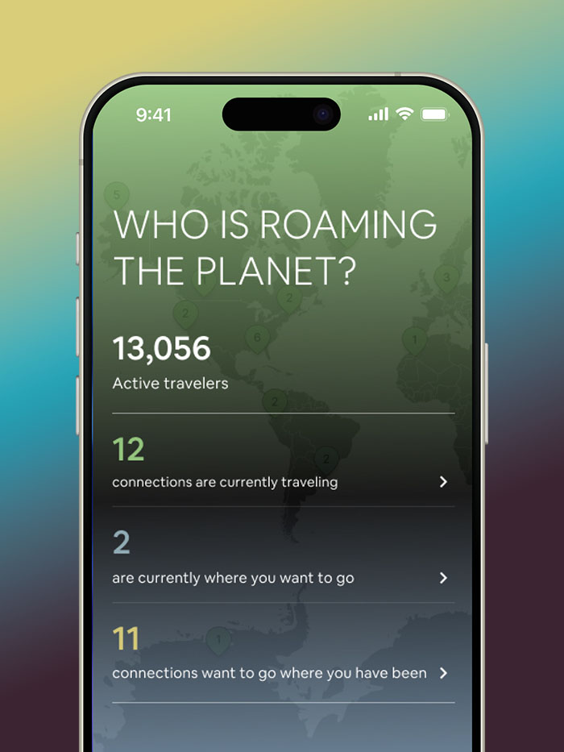
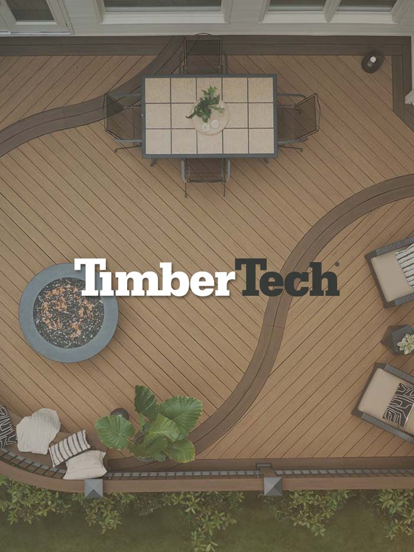
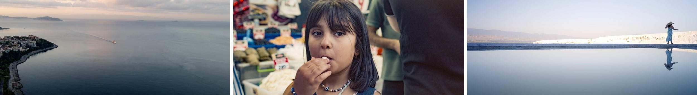
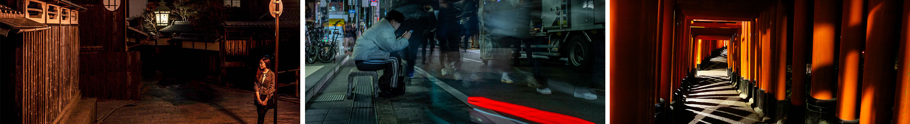
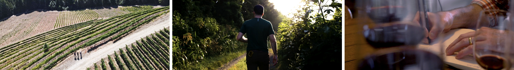
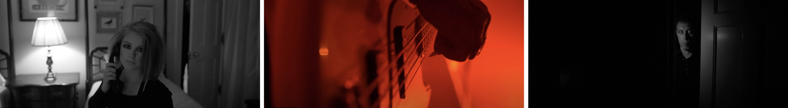
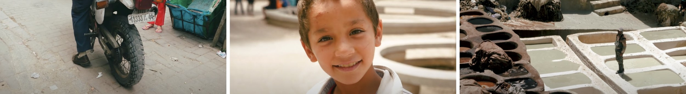
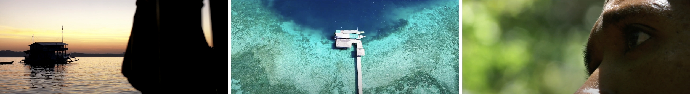

Global PerspectiveMeets
AI-Driven Experience Design
Hi, I'm Dan — a designer with over 11 years of crafting human-centered digital experiences, shaped by a lot of passport stamps and a camera that's never too far away. Lately, I've been navigating this wild intersection of AI, design, and whatever sparks authentic creativity.
Always Curious.
I tinker & build things.
I shape narrative through the art of cinematic imagery.
I'm passionate about bringing real value—whether to people, companies, or causes.
Industries Served
Projects Completed
URLs Impacted
DESIGN CAREER
11+ Years Turning Pixels into Impact
Select Design Work
A selection of my recent work in design and development, showcasing my approach to creating meaningful digital experiences.
Purdue University
A web redesign project focused on enhancing UX, UI, and streamlining content management.
View Project
AI Sandbox
Using AI and systems thinking to solve real-world travel challenges through design and hands-on experimentation.
View Project
Previous Projects
A collection of past projects highlighting expertise in UX, UI, and web design.
View ProjectsVideo Projects
A collection of video projects showcasing my work in cinematography and visual storytelling.
* All visuals are captured through my lens — nothing AI generated, nothing artificial






Photography Journal
A collection of stills capturing global travels and the unfolding story of a start-up winery and its passionate founders, crafting dreams from the vine.